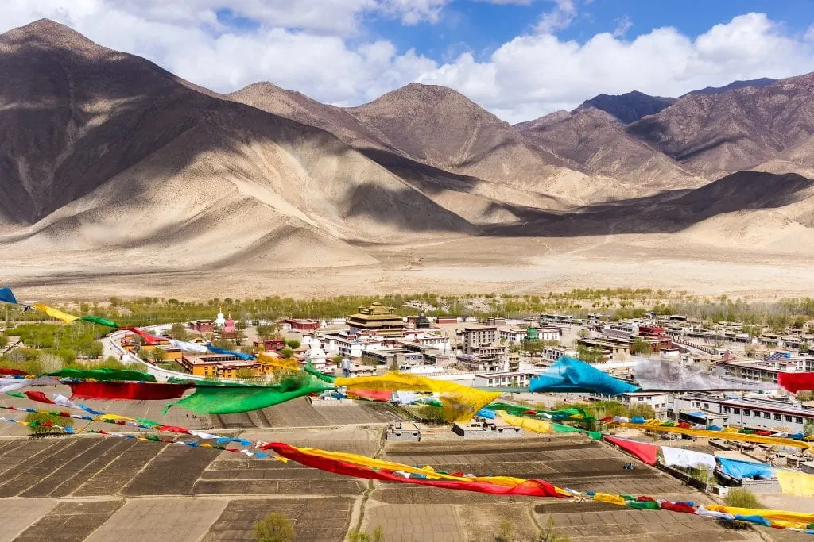

📍 Yarlung Valley
Yumbhulhagang, Tibet’s first palacemarks the beginning of Tibetan kingship and civilization. Perched above the Yarlung Valley, it embodies the union of myth, governance, and spiritual tradition at the roots of Tibetan identity.
Nearly destroyed during China’s Cultural Revolution, Yumbhulhagang became a symbol of the broader effort to erase Tibet’s cultural and spiritual heritage following the 1950 occupation. Though later rebuilt, it remains a powerful reminder of the Tibetan people's deep connection to their land and the enduring strength of their identity.